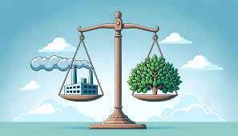
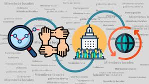

ROL DE LOS GOBIERNOS EN LA PROMOCIÓN DE POLÍTICAS AMBIENTALES
Los gobiernos tienen un papel fundamental en la promoción de políticas ambientales, ya que son responsables de velar por la protección del medio ambiente y garantizar un desarrollo sostenible. Algunas de las funciones que desempeńan los gobiernos en este ámbito son:
- Elaboración y promoción de leyes y regulaciones ambientales: Los gobiernos tienen la tarea de crear leyes y regulaciones que promuevan el cuidado del medio ambiente, como la prohibición de la contaminación o la protección de áreas naturales.
- - Fomento de la educación ambiental: Los gobiernos pueden promover programas de educación ambiental para concienciar a la población sobre la importancia de cuidar el medio ambiente y promover prÁcticas sostenibles.
- Incentivos económicos: Los gobiernos pueden ofrecer incentivos económicos a empresas y ciudadanos que adopten prÁcticas ambientalmente responsables, como la reducción de emisiones de gases de efecto invernadero o el uso de energÍas renovables.
- Promoción de la investigación y la innovación: Los gobiernos pueden fomentar la investigación y el desarrollo de tecnologías y prácticas ambientales sostenibles, así como apoyar la innovación en este ámbito
- Cooperación internacional: Los gobiernos pueden colaborar con otros países en la promoción de políticas ambientales a nivel global, participando en acuerdos internacionales y comprometiéndose a reducir su impacto en el medio ambiente.
En resumen, los gobiernos son clave en la promoción de políticas ambientales ya que tienen la autoridad y los recursos necesarios para implementar medidas efectivas para proteger el medio ambiente y garantizar un desarrollo sostenible.

